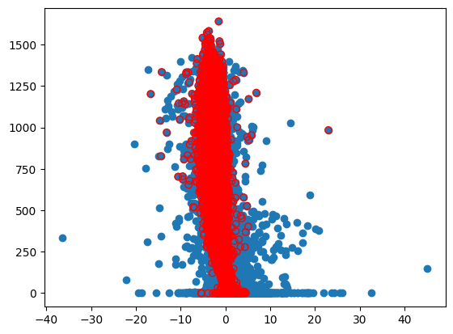
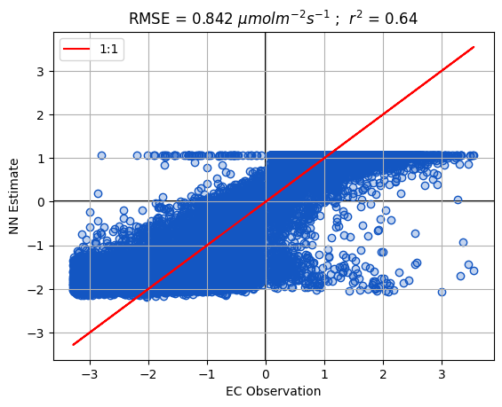
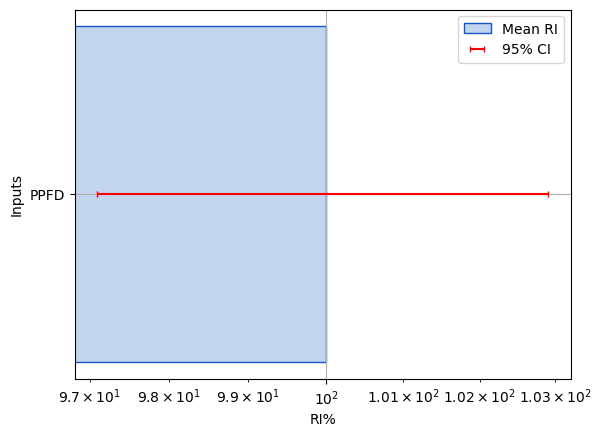
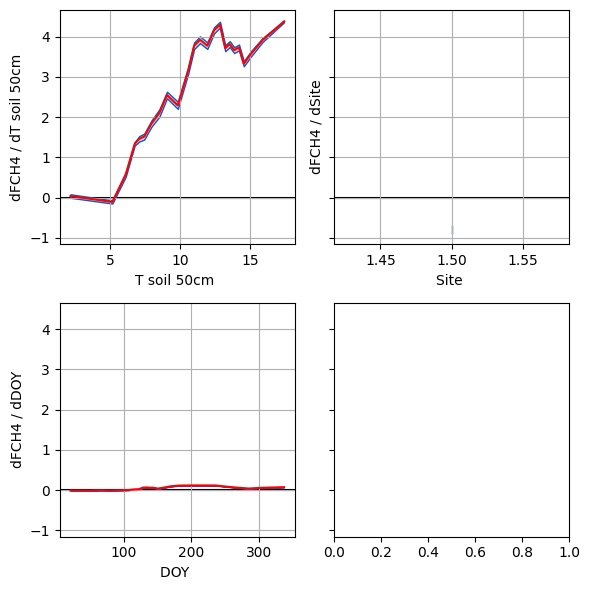

## Import some standard packages and define a few functions
import os
# Hide default info, logs, and warnings - comment out if you need to troubleshoot
os.environ['TF_CPP_MIN_LOG_LEVEL'] = '3'
import time
import shutil
import importlib
import numpy as np
import pandas as pd
# from matplotlib import cm
from sklearn import metrics
import matplotlib.pyplot as plt
from Scripts import PlotHelpers
# from matplotlib.colors import Normalize
from Scripts import ReadDB, MiscFuncs, NNetFuncs
# dbNames = {
# 'Clean/SecondStage/TA_1_1_1':'T air',
# 'Clean/SecondStage/RH_1_1_1':'RH',
# 'Clean/SecondStage/FC':'FCO2',
# 'Clean/SecondStage/FCH4':'FCH4',
# 'Clean/SecondStage/PPFD_IN_1_1_1':'PPFD',
# 'Clean/SecondStage/NETRAD_1_1_1':'Rn',
# 'Clean/SecondStage/P_1_1_1':'Precip',
# 'Flux/qc_co2_flux':'qc_FCO2',
# 'Flux/qc_ch4_flux':'qc_FCH4',
# 'Clean/SecondStage/USTAR':'u*',
# 'Clean/SecondStage/TS_1':'T soil 5cm',
# 'Clean/SecondStage/TS_2':'T soil 10cm',
# 'Clean/SecondStage/TS_3':'T soil 50cm',
# 'Clean/SecondStage/wind_speed':'Wind speed',
# 'Clean/SecondStage/wind_dir':'Wind dir',
# 'Clean/SecondStage/WTD_1_1_1':'Water table',
# }
# Local = '/mnt/c/Users/User/PostDoc_Work/database/'
# Remote = '/mnt/w/'
# Dir = Local
# read_new = True
# if read_new == True:
# Data = ReadDB.get_Traces(Site,list(dbNames.keys()),Dir=Dir)
# Data = Data.rename(columns=dbNames)
# Data.to_csv(f'InputData/{Site}_Data.csv')
# else:
# Data = pd.read_csv(f'InputData/{Site}_Data.csv',parse_dates=['TIMESTAMP'],index_col='TIMESTAMP')
Neural Networks for Eddy Covarinace
Site = 'BB'
Data = pd.read_csv(f'InputData/NN_Data_{Site}.csv',parse_dates=['TIMESTAMP'],index_col='TIMESTAMP')
# BB2 = pd.read_csv('InputData/NN_Data_BB2.csv',parse_dates=['TIMESTAMP'],index_col='TIMESTAMP')
# def Q_clip(df,trace,q=[.001,.999]):
# qv=df[trace].quantile(q).values
# df.loc[((df[trace]<qv[0])|df[trace]>qv[-1]),trace]=np.nan
# return(df[trace])
Data = Data.loc[Data.index.year>=2018].copy()
Vars = {'WTD_1_1_1':'Water table',
'TA_1_1_1':'T air',
'RH_1_1_1':'RH',
'FC':'FCO2',
'FCH4':'FCH4',
'PPFD_IN_1_1_1':'PPFD',
'NETRAD_1_1_1':'Rn',
'P_1_1_1':'Precip',
'qc_co2_flux':'qc_FCO2',
'qc_ch4_flux':'qc_FCH4',
'USTAR':'u*',
'TS_1':'T soil 5cm',
'TS_2':'T soil 10cm',
'TS_3':'T soil 50cm',
'WS_1_1_1':'Wind speed',
'WD_1_1_1':'Wind dir'}
Data = Data.rename(columns=Vars)
reff = Data.loc[Data.index.date==pd.Timestamp('2020-03-18').date(),'Water table'].mean()
Data['Water table'] = Data['Water table'] - reff
# BB1 = BB1.rename(columns=Vars)
# BB2 = BB2.rename(columns=Vars)
# BB1['Site'] = 1
# BB1_reff = BB1.loc[BB1.index.date==pd.Timestamp('2020-03-18').date(),'Water table'].mean()
# BB1['Water table'] = BB1['Water table'] - BB1_reff
# BB2['Site'] = 2
# BB2_reff = BB2.loc[BB2.index.date==pd.Timestamp('2020-03-18').date(),'Water table'].mean()
# BB2['Water table'] = BB2['Water table'] - BB2_reff
# bearing = 166
# BB1.loc[BB1['Wind dir']-bearing]
# Data = pd.concat([BB1,BB2])
Data = Data.drop(columns=['SW_IN_1_1_1','LW_IN_1_1_1','SW_OUT_1_1_1','LW_OUT_1_1_1','VPD_1_1_1','PA_1_1_1'])
print(Data.shape)
Data = Data.dropna(how='any')
print(Data.shape)(105169, 16)
(29988, 16)Pre-processing
importlib.reload(ReadDB)
Data['VPD'] = MiscFuncs.Calc_VPD(Data['T air'],Data['RH'])
Data['Water table'] = -1*(70-Data['Water table'])
Data['DOY'] = Data.index.dayofyear
target = ['FCO2','FCH4']
Data['Rand']=np.random.random(Data['FCO2'].values.shape)
Data['Rand_Binary'] = Data['Rand']-.5
Data['Rand_Skew'] = Data['Rand']**.25
Data.loc[Data['Rand_Binary']>0,'Rand_Binary']=1
Data.loc[Data['Rand_Binary']<0,'Rand_Binary']=-1
Rand_Scalars=['Rand','Rand_Binary','Rand_Skew']
print(Data[['FCO2','FCH4']].describe())
filter = ReadDB.filterFlux(Data,target)
filter.QA_QC()
# filter.dir_mask('Wind dir',[[0,45],[315,360]])
filter.rain('Precip',thresh=0)
# filter.MAD(z=5)
filter.uStar('u*',u_thresh=0.1)
Data[['FCO2_Clean','FCH4_Clean']] = filter.df[['FCO2','FCH4']].copy()
print(Data[['FCO2_Clean','FCH4_Clean']].describe())
excludes = ['fco2','fch4','precip']
Full_inputs = []
for val in list(Data.columns):
exct = 0
for ex in excludes:
if ex in val.lower():
exct += 1
if exct < 1:
Full_inputs.append(val)
Data.count() FCO2 FCH4
count 29988.000000 29988.000000
mean -0.455273 48.452158
std 2.314013 65.492819
min -36.371260 -198.555830
25% -1.783542 9.644733
50% -0.224877 31.494045
75% 0.666671 82.179884
max 45.147030 686.522200
FCO2_Clean FCH4_Clean
count 15396.000000 17450.000000
mean -1.196605 55.352024
std 1.856238 49.478366
min -16.697300 -176.868300
25% -2.545481 13.166115
50% -1.185378 40.418017
75% 0.259368 93.315557
max 23.026184 514.325700Rn 29988
PPFD 29988
T air 29988
T soil 5cm 29988
T soil 10cm 29988
T soil 50cm 29988
RH 29988
Precip 29988
Wind speed 29988
Wind dir 29988
Water table 29988
u* 29988
FCO2 29988
FCH4 29988
qc_FCO2 29988
qc_FCH4 29988
VPD 29988
DOY 29988
Rand 29988
Rand_Binary 29988
Rand_Skew 29988
FCO2_Clean 15396
FCH4_Clean 17450
dtype: int64fig,ax=plt.subplots()
ax.scatter(Data['FCO2'],Data['PPFD'])
ax.scatter(Data['FCO2_Clean'],Data['PPFD'],facecolors='none', edgecolors='r')
Data.loc[((Data['FCO2_Clean']<0)&(Data['PPFD']<5))]| Rn | PPFD | T air | T soil 5cm | T soil 10cm | T soil 50cm | RH | Precip | Wind speed | Wind dir | ... | FCH4 | qc_FCO2 | qc_FCH4 | VPD | DOY | Rand | Rand_Binary | Rand_Skew | FCO2_Clean | FCH4_Clean | |
|---|---|---|---|---|---|---|---|---|---|---|---|---|---|---|---|---|---|---|---|---|---|
| TIMESTAMP | |||||||||||||||||||||
| 2018-09-07 01:00:00 | -43.128560 | 0.008049 | 10.359350 | 16.032904 | 15.806022 | 15.322218 | 95.989540 | 0.0 | 0.447382 | 182.968890 | ... | 109.246170 | 0.0 | 0.0 | 5.063089e-01 | 250 | 0.364599 | -1.0 | 0.777059 | -0.251189 | 109.246170 |
| 2018-09-07 21:30:00 | -5.673309 | 0.010729 | 14.604237 | 15.951805 | 15.627492 | 15.252795 | 98.143490 | 0.0 | 0.989659 | 86.495705 | ... | 91.680466 | 0.0 | 0.0 | 3.097148e-01 | 250 | 0.586010 | 1.0 | 0.874936 | -0.692962 | 91.680466 |
| 2018-09-08 19:30:00 | -17.488834 | 0.064360 | 15.771963 | 16.176157 | 15.903015 | 15.447454 | 95.503620 | 0.0 | 0.905848 | 27.063473 | ... | 62.703990 | 0.0 | 0.0 | 8.085810e-01 | 251 | 0.074613 | -1.0 | 0.522640 | -1.475593 | 62.703990 |
| 2018-09-08 20:00:00 | -15.425125 | 0.058013 | 15.348302 | 16.163733 | 15.850715 | 15.435830 | 95.449990 | 0.0 | 0.569989 | 161.495360 | ... | 66.677345 | 0.0 | 0.0 | 7.963082e-01 | 251 | 0.004228 | -1.0 | 0.254997 | -1.900765 | 66.677345 |
| 2018-09-08 20:30:00 | -12.295860 | 0.013409 | 15.044191 | 16.164623 | 15.738058 | 15.450691 | 96.822020 | 0.0 | 1.152366 | 135.747680 | ... | 70.325740 | 0.0 | 0.0 | 5.454207e-01 | 251 | 0.917991 | 1.0 | 0.978835 | -1.721321 | 70.325740 |
| ... | ... | ... | ... | ... | ... | ... | ... | ... | ... | ... | ... | ... | ... | ... | ... | ... | ... | ... | ... | ... | ... |
| 2021-02-16 23:00:00 | -75.242165 | 0.000000 | 5.555014 | 3.498761 | 3.629818 | 6.416536 | 79.725365 | 0.0 | 4.218254 | 319.816000 | ... | 2.240025 | 0.0 | 0.0 | 1.845651e+00 | 47 | 0.575242 | 1.0 | 0.870889 | -1.093810 | 2.240025 |
| 2021-02-22 21:00:00 | -36.564200 | 0.000000 | 6.883492 | 6.075706 | 5.752314 | 6.460669 | 75.322860 | 0.0 | 4.409684 | 308.870450 | ... | -0.343134 | 0.0 | 1.0 | 2.462149e+00 | 53 | 0.185709 | -1.0 | 0.656460 | -0.975886 | NaN |
| 2022-01-27 00:30:00 | -4.966819 | 0.346958 | 1.410606 | 5.505546 | 5.795523 | 7.158379 | 100.000000 | 0.0 | 1.002757 | 18.365236 | ... | 5.716230 | 0.0 | 1.0 | -1.110223e-15 | 27 | 0.202556 | -1.0 | 0.670867 | -0.438759 | NaN |
| 2023-01-22 00:30:00 | -34.673756 | 0.000000 | 4.101948 | 5.547119 | 5.923764 | 7.107648 | 96.597960 | 0.0 | 1.953380 | 331.442750 | ... | 18.144798 | 0.0 | 1.0 | 2.798234e-01 | 22 | 0.491008 | -1.0 | 0.837090 | -0.784649 | NaN |
| 2023-03-24 23:30:00 | -5.295106 | 0.005812 | 3.700751 | 8.030537 | 8.247041 | 7.808859 | 100.000000 | 0.0 | 1.226768 | 59.598522 | ... | -36.799400 | 0.0 | 1.0 | 0.000000e+00 | 83 | 0.924235 | 1.0 | 0.980495 | -0.735831 | NaN |
71 rows × 23 columns

Make Scenarios
def Configure_Run(run,name,df,Base='',H=[10],N_scale=1):
print(df.shape)
run['config']['Name']=name
run['config']['Base']=Base
# Nodes / layer = the number of inputs times a multiplier
# Defaults to a scaled function of the number of inputs
Nodes = [h*int(len(run['config']['inputs'])**N_scale) for h in H]
run['config']['Nodes']=Nodes
run['config']['Activation']=['relu' for h in H]
run['config']['epochs']=250
# Drop_Thresh = RI'^(Prune_scale[0])+Prune_scale[1]
# RI' is the sum of RI for the random scalar inputs
run['config']['Prune_scale']=[1,0]
run['config']['Norm']=True
run['config']['RF_comp']=False
run['config']['validation_split']=.2
run['config']['patience']=2
run['config']['N_models']=10
run['Training'] = {}
# run['Evaluation'] = {}
target = Model_Runs[key]['config']['target']
inputs = Model_Runs[key]['config']['inputs']
# Scale to inputs before dropping all NaN rows
Model_Runs[key]['config']['mean'] = df[inputs].mean().values
Model_Runs[key]['config']['variance'] = df[inputs].std().values**2
# print(df[target+inputs].shape)
# print('!!!')
df = df[target+inputs].dropna().copy()
Model_Runs[key]['Training']['X'] = df[inputs].values
Model_Runs[key]['Training']['Y'] = df[target].values.flatten()
# print(df[target].isna())
# print(df.loc[df[target].isna().values])
# Larger batch > runs faster > but won't fit as well
batch = np.ceil(Model_Runs[key]['Training']['Y'].shape[0]*.02)
if batch<32:
batch=32
run['config']['batch_size']=int(batch)
return(run)
Model_Runs = {
'Full_Model_FCH4':{
'config':{
'target':['FCH4_Clean'],
'inputs':Full_inputs,
'Rand_Scalars':Rand_Scalars,
},
},
'Full_Model_FCO2':{
'config':{
'target':['FCO2_Clean'],
'inputs':Full_inputs,
'Rand_Scalars':Rand_Scalars,
},
},
}
for key in Model_Runs.keys():
print(key)
Base = key.split('_')[-1]
Model_Runs[key] = Configure_Run(Model_Runs[key],key,Data.copy(),Base=Base)
Model_Runs[key]['config']Full_Model_FCH4
(48159, 24)
Full_Model_FCO2
(48159, 24){'target': ['FCO2_Clean'],
'inputs': ['Rn',
'PPFD',
'T air',
'T soil 5cm',
'T soil 10cm',
'T soil 50cm',
'RH',
'Wind speed',
'Wind dir',
'Water table',
'u*',
'Site',
'VPD',
'DOY',
'Rand',
'Rand_Binary',
'Rand_Skew'],
'Rand_Scalars': ['Rand', 'Rand_Binary', 'Rand_Skew'],
'Name': 'Full_Model_FCO2',
'Base': 'FCO2',
'Nodes': [170],
'Activation': ['relu'],
'epochs': 250,
'Prune_scale': [1, 0],
'Norm': True,
'RF_comp': False,
'validation_split': 0.2,
'patience': 2,
'N_models': 10,
'mean': array([ 1.76824452e+02, 5.02972458e+02, 1.36348069e+01, 1.31667047e+01,
1.25963842e+01, 1.20687096e+01, 7.43447710e+01, 2.37326404e+00,
1.71828349e+02, -8.07328006e+01, 2.17614683e-01, 1.37731265e+00,
5.02962089e+00, 1.72169190e+02, 4.97900904e-01, -6.16707158e-03,
7.98814945e-01]),
'variance': array([4.53543913e+04, 2.67568226e+05, 5.04487360e+01, 2.76159388e+01,
2.12257250e+01, 1.42717735e+01, 3.05131902e+02, 1.99271070e+00,
6.64751506e+03, 2.40256658e+02, 1.53389998e-02, 2.34952693e-01,
2.39933935e+01, 6.56642152e+03, 8.32717641e-02, 9.99982731e-01,
2.68468931e-02]),
'batch_size': 455}print(Data.shape)
print(Data[['FCH4_Clean']+Full_inputs].dropna().shape)(48159, 24)
(17231, 18)Build and train model
importlib.reload(NNetFuncs)
def Build_Train_Eval(Run,print_sum=False):
config = Run['config']
Training = Run['Training']
NNetFuncs.make_Dense_model(config,print_sum=print_sum)
Eval=NNetFuncs.train_model(config,Training)
_=NNetFuncs.run_Model(config,Eval)
for Run in Model_Runs.keys():
print(Run)
Build_Train_Eval(Model_Runs[Run],print_sum=True)
print('\n\n')Full_Model_FCH4
Model: "Full_Model_FCH4"
_________________________________________________________________
Layer (type) Output Shape Param #
=================================================================
input_1 (InputLayer) [(None, 17)] 0
normalization (Normalizatio (None, 17) 0
n)
dense (Dense) (None, 170) 3060
dense_1 (Dense) (None, 1) 171
=================================================================
Total params: 3,231
Trainable params: 3,231
Non-trainable params: 0
_________________________________________________________________
None
(12923,) 0
(12923,) 0
(12923,) 0
(12923,) 0
(12923,) 0
(12923,) 0
(12923,) 0
(12923,) 0
(12923,) 0
(12923,) 0
Training Time:
102.1 Seconds
(4308,)
(10, 4308, 1)/home/jskeeter/NN_Applications/Scripts/NNetFuncs.py:179: PerformanceWarning: DataFrame is highly fragmented. This is usually the result of calling `frame.insert` many times, which has poor performance. Consider joining all columns at once using pd.concat(axis=1) instead. To get a de-fragmented frame, use `newframe = frame.copy()`
Mean_Output[f'dy_d{xi}_norm_CI95']=full_out['dy_dx_norm'].std(axis=0)[:,i]/(N)**.5*t_score
/home/jskeeter/NN_Applications/Scripts/NNetFuncs.py:177: PerformanceWarning: DataFrame is highly fragmented. This is usually the result of calling `frame.insert` many times, which has poor performance. Consider joining all columns at once using pd.concat(axis=1) instead. To get a de-fragmented frame, use `newframe = frame.copy()`
Mean_Output[f'dy_d{xi}_norm']=full_out['dy_dx_norm'].mean(axis=0)[:,i]
/home/jskeeter/NN_Applications/Scripts/NNetFuncs.py:178: PerformanceWarning: DataFrame is highly fragmented. This is usually the result of calling `frame.insert` many times, which has poor performance. Consider joining all columns at once using pd.concat(axis=1) instead. To get a de-fragmented frame, use `newframe = frame.copy()`
Mean_Output[f'{xi}_norm']=full_out['X_norm'].mean(axis=0)[:,i]
/home/jskeeter/NN_Applications/Scripts/NNetFuncs.py:179: PerformanceWarning: DataFrame is highly fragmented. This is usually the result of calling `frame.insert` many times, which has poor performance. Consider joining all columns at once using pd.concat(axis=1) instead. To get a de-fragmented frame, use `newframe = frame.copy()`
Mean_Output[f'dy_d{xi}_norm_CI95']=full_out['dy_dx_norm'].std(axis=0)[:,i]/(N)**.5*t_scoreNN Model
Validation metrics (ensemble mean):
r2 = 0.5698
RMSE = 9.52423
Run Time:
1.03 Seconds
10 models
Mean epochs/model: 64.0
Full_Model_FCO2
Model: "Full_Model_FCO2"
_________________________________________________________________
Layer (type) Output Shape Param #
=================================================================
input_1 (InputLayer) [(None, 17)] 0
normalization (Normalizatio (None, 17) 0
n)
dense (Dense) (None, 170) 3060
dense_1 (Dense) (None, 1) 171
=================================================================
Total params: 3,231
Trainable params: 3,231
Non-trainable params: 0
_________________________________________________________________
None
(17059,) 0
(17059,) 0
(17059,) 0
(17059,) 0
(17059,) 0
(17059,) 0
(17059,) 0
(17059,) 0
(17059,) 0
(17059,) 0
Training Time:
56.89 Seconds
(5687,)
(10, 5687, 1)/home/jskeeter/NN_Applications/Scripts/NNetFuncs.py:179: PerformanceWarning: DataFrame is highly fragmented. This is usually the result of calling `frame.insert` many times, which has poor performance. Consider joining all columns at once using pd.concat(axis=1) instead. To get a de-fragmented frame, use `newframe = frame.copy()`
Mean_Output[f'dy_d{xi}_norm_CI95']=full_out['dy_dx_norm'].std(axis=0)[:,i]/(N)**.5*t_score
/home/jskeeter/NN_Applications/Scripts/NNetFuncs.py:177: PerformanceWarning: DataFrame is highly fragmented. This is usually the result of calling `frame.insert` many times, which has poor performance. Consider joining all columns at once using pd.concat(axis=1) instead. To get a de-fragmented frame, use `newframe = frame.copy()`
Mean_Output[f'dy_d{xi}_norm']=full_out['dy_dx_norm'].mean(axis=0)[:,i]
/home/jskeeter/NN_Applications/Scripts/NNetFuncs.py:178: PerformanceWarning: DataFrame is highly fragmented. This is usually the result of calling `frame.insert` many times, which has poor performance. Consider joining all columns at once using pd.concat(axis=1) instead. To get a de-fragmented frame, use `newframe = frame.copy()`
Mean_Output[f'{xi}_norm']=full_out['X_norm'].mean(axis=0)[:,i]
/home/jskeeter/NN_Applications/Scripts/NNetFuncs.py:179: PerformanceWarning: DataFrame is highly fragmented. This is usually the result of calling `frame.insert` many times, which has poor performance. Consider joining all columns at once using pd.concat(axis=1) instead. To get a de-fragmented frame, use `newframe = frame.copy()`
Mean_Output[f'dy_d{xi}_norm_CI95']=full_out['dy_dx_norm'].std(axis=0)[:,i]/(N)**.5*t_scoreNN Model
Validation metrics (ensemble mean):
r2 = 0.88828
RMSE = 0.46135
Run Time:
1.53 Seconds
10 models
Mean epochs/model: 39.2
Evaluate and prune the model
importlib.reload(NNetFuncs)
for key in ['Full_Model_FCH4','Full_Model_FCO2']:
Continue_Prune = 1
T1 = time.time()
while Continue_Prune > 0:
config = Model_Runs[key]['config']
RI = NNetFuncs.Prune(config,Verbose=True)
Pruned_Inputs = list(RI.loc[RI['Drop']==0].index)
print('Inputs: ',Pruned_Inputs,'\n\n')
if len(Pruned_Inputs)<len(config['inputs'])-len(Rand_Scalars) and len([i for i in Rand_Scalars if i in list(RI.index)]):
key = f"Pruned_Model_{config['Base']}"
if len(Pruned_Inputs)<len(Rand_Scalars):
drop_rand = RI.loc[RI.index.isin(Rand_Scalars)].sort_values(by='RI_bar').index[0]
config['Rand_Scalars'].remove(drop_rand)
for r in config['Rand_Scalars']:
if r not in Pruned_Inputs:
Pruned_Inputs.append(r)
Model_Runs[key]={
'config':{
'target':config['target'],
'inputs':Pruned_Inputs,
'Rand_Scalars':Rand_Scalars,
},
}
Model_Runs[key] = Configure_Run(Model_Runs[key],key,Data.copy(),config['Base'])
print('Re-training on ',Model_Runs[key]['config']['inputs'])
Build_Train_Eval(Model_Runs[key])
print()
else:
Continue_Prune = 0
key = f"Final_Model_{config['Base']}"
Model_Runs[key]={
'config':{
'target':config['target'],
'inputs':Pruned_Inputs
},
}
print('Final inputs: ',Model_Runs[key]['config']['inputs'])#[:-1],'\n\n')
Model_Runs[key] = Configure_Run(Model_Runs[key],key,Data.copy(),config['Base'])
Model_Runs[key]['config']['N_models']=30
Model_Runs[key]['config']['patience']=2
# Build_Train_Eval(Model_Runs[key],print_sum=True)
# shutil.rmtree(f'Models/{Base}/Pruned_Model')
T2 = time.time()
print("Pruning Time: ", T2-T1) Rn T air Wind speed Rand_Binary Wind dir T soil 5cm u* \
RI_bar 1.05 1.17 1.18 1.35 1.81 1.84 2.00
lower_bound 0.93 1.03 0.98 1.23 1.68 1.71 1.71
Drop 7.76 7.76 7.76 7.76 7.76 7.76 7.76
Rand Rand_Skew VPD PPFD Water table RH T soil 10cm \
RI_bar 3.05 3.36 3.88 3.89 4.38 4.79 8.68
lower_bound 2.75 3.03 3.51 3.44 2.77 4.56 7.50
Drop 7.76 7.76 7.76 7.76 7.76 7.76 7.76
Site DOY T soil 50cm
RI_bar 9.05 18.03 30.49
lower_bound 8.29 17.30 27.38
Drop 0.00 0.00 0.00
Inputs: ['Site', 'DOY', 'T soil 50cm']
(48159, 24)
Re-training on ['Site', 'DOY', 'T soil 50cm', 'Rand', 'Rand_Binary', 'Rand_Skew']
Training Time:
143.61 Seconds
(4308,)
(10, 4308, 1)
NN Model
Validation metrics (ensemble mean):
r2 = 0.52758
RMSE = 9.9806
Run Time:
0.49 Seconds
10 models
Mean epochs/model: 97.2
Rand_Skew Rand Rand_Binary Site DOY T soil 50cm
RI_bar 1.96 1.98 2.16 15.82 16.18 61.90
lower_bound 1.53 1.63 1.94 14.18 15.58 59.81
Drop 6.10 6.10 6.10 0.00 0.00 0.00
Inputs: ['Site', 'DOY', 'T soil 50cm']
Final inputs: ['Site', 'DOY', 'T soil 50cm']
(48159, 24)
Pruning Time: 144.25185298919678
Wind dir Wind speed u* T air DOY Water table RH \
RI_bar 0.28 0.85 0.92 0.98 1.23 1.27 1.45
lower_bound 0.26 0.76 0.83 0.79 1.12 1.24 1.29
Drop 6.00 6.00 6.00 6.00 6.00 6.00 6.00
Rand_Binary Rand T soil 5cm Rand_Skew VPD Site \
RI_bar 1.57 1.82 2.26 2.61 3.60 3.89
lower_bound 1.41 1.56 1.84 2.24 3.12 3.37
Drop 6.00 6.00 6.00 6.00 6.00 6.00
T soil 50cm T soil 10cm Rn PPFD
RI_bar 6.28 7.00 15.79 48.18
lower_bound 5.91 5.97 14.88 43.79
Drop 6.00 6.00 0.00 0.00
Inputs: ['Rn', 'PPFD']
(48159, 24)
Re-training on ['Rn', 'PPFD', 'Rand', 'Rand_Skew']
Training Time:
76.58 Seconds
(5687,)
(10, 5687, 1)
NN Model
Validation metrics (ensemble mean):
r2 = 0.64158
RMSE = 0.82636
Run Time:
0.64 Seconds
10 models
Mean epochs/model: 36.7
Rand Rand_Skew Rn PPFD
RI_bar 8.82 13.27 20.25 57.66
lower_bound 6.46 9.30 17.78 51.92
Drop 22.08 22.08 22.08 0.00
Inputs: ['PPFD']
(48159, 24)
Re-training on ['PPFD', 'Rand_Skew']
Training Time:
95.23 Seconds
(5687,)
(10, 5687, 1)
NN Model
Validation metrics (ensemble mean):
r2 = 0.63319
RMSE = 0.83598
Run Time:
0.65 Seconds
10 models
Mean epochs/model: 47.0
Rand_Skew PPFD
RI_bar 0.19 99.81
lower_bound 0.14 98.10
Drop 0.19 0.00
Inputs: ['PPFD']
Final inputs: ['PPFD']
(48159, 24)
Pruning Time: 173.2687132358551for key in ['Final_Model_FCH4','Final_Model_FCO2']:
Model_Runs[key]['config']['N_models']=30
Model_Runs[key]['config']['patience']=2
Build_Train_Eval(Model_Runs[key],print_sum=True)
Model_Runs.keys()Model: "Final_Model_FCH4"
_________________________________________________________________
Layer (type) Output Shape Param #
=================================================================
input_1 (InputLayer) [(None, 3)] 0
normalization (Normalizatio (None, 3) 0
n)
dense (Dense) (None, 30) 120
dense_1 (Dense) (None, 1) 31
=================================================================
Total params: 151
Trainable params: 151
Non-trainable params: 0
_________________________________________________________________
None
Training Time:
609.65 Seconds
(4308,)
(30, 4308, 1)
NN Model
Validation metrics (ensemble mean):
r2 = 0.52796
RMSE = 9.72222
Run Time:
1.34 Seconds
30 models
Mean epochs/model: 113.83333333333333
Model: "Final_Model_FCO2"
_________________________________________________________________
Layer (type) Output Shape Param #
=================================================================
input_1 (InputLayer) [(None, 1)] 0
normalization (Normalizatio (None, 1) 0
n)
dense (Dense) (None, 10) 20
dense_1 (Dense) (None, 1) 11
=================================================================
Total params: 31
Trainable params: 31
Non-trainable params: 0
_________________________________________________________________
None
Training Time:
274.08 Seconds
(5687,)
(30, 5687, 1)
NN Model
Validation metrics (ensemble mean):
r2 = 0.63214
RMSE = 0.85985
Run Time:
1.05 Seconds
30 models
Mean epochs/model: 64.76666666666667dict_keys(['Full_Model_FCH4', 'Full_Model_FCO2', 'Pruned_Model_FCH4', 'Final_Model_FCH4', 'Pruned_Model_FCO2', 'Final_Model_FCO2'])Inspect pruned model
importlib.reload(PlotHelpers)
key = 'Final_Model_FCO2'
config = Model_Runs[key]['config']
Eval = Model_Runs[key]['Training']
full_out=NNetFuncs.run_Model(config,Eval)
# print('\n\n')
Base = Model_Runs[key]['config']['Base']
Name = Model_Runs[key]['config']['Name']
# run = 'Feature_Detection'
if config['Base']=='FCH4':
unit = '$nmol m^{-2} s^{-1}$'
else:
unit = '$\mu mol m^{-2} s^{-1}$'
df = pd.read_csv(f'Models/{Base}/{Name}/model_output.csv',index_col=[0])
fig,ax=plt.subplots()
ax = PlotHelpers.make1_1_Plot(ax,df,'target','y_bar',unit=unit)
ax.set_ylabel('NN Estimate')
ax.set_xlabel('EC Observation')
RI = pd.read_csv(f'Models/{Base}/{Name}/model_RI.csv',index_col=[0])
RI = RI.sort_values(by=f'RI_bar',ascending=True)
fig,ax=plt.subplots()
PlotHelpers.makeRI_plot(ax,RI)
print(RI.round(2))(22746,)
(30, 22746, 1)
NN Model
Validation metrics (ensemble mean):
r2 = 0.63968
RMSE = 0.84153
Run Time:
1.96 Seconds
30 models
Mean epochs/model: 64.76666666666667
RI_bar RI_CI95
PPFD 100.0 2.9

importlib.reload(PlotHelpers)
importlib.reload(MiscFuncs)
Max=6
Top = list(RI.sort_values(by=f'RI_bar',ascending=False).index)
exclude = ['HR']
for ex in exclude:
try:
Top.remove(ex)
except:
pass
Top = Top[:Max]
cols = 2
npi=len(RI.index)
rows = int(np.ceil(len(Top)/2))
fig,axes=plt.subplots(rows,cols,sharey=True,
figsize=(6,6))
axes = axes.flatten()
mod = ''
for i,xi in enumerate(Top):
print(xi)
# ax.axvspan(0,0,edgecolor='k',linewidth=1.5)
df_int = MiscFuncs.byInterval(df,f'{xi}{mod}',[f'dy_d{xi}{mod}'],bins=25)
PlotHelpers.CI_Plot(axes[i],df_int,f'dy_d{xi}{mod}')
plt.tight_layout()
axes[i].get_ylabel()
for ax in axes:
l = ax.get_ylabel().split('_norm')[0]
ax.set_ylabel(l.replace('_',' / ').replace('y',config['Base']))
ax.set_xlabel(l.split('_d')[-1]+' '+mod.split('_')[-1])
plt.tight_layout()T soil 50cm
Site
DOY
# df = pd.read_csv(f'Models/{run}/random_forest_output.csv',index_col=[0])
# unit = ''
# fig,ax=plt.subplots()
# ax.scatter(df['target'],df['y_bar'])
# ax.plot(df['target'],df['target'],color='k')
# r2 = np.round(metrics.r2_score(df['target'],df['y_bar']),2)
# RMSE = np.round(metrics.mean_squared_error(df['target'],df['y_bar'])**.5,2)
# ax = PlotHelpers.make1_1_Plot(ax,df,'target','y_bar',unit=unit)
# ax.set_ylabel('NN Estimate')
# ax.set_xlabel('EC Observation')
# RF_RI = pd.read_csv(f'Models/{run}/random_forest_RI.csv',index_col=[0])
# mod = ''
# RF_RI = RF_RI.sort_values(by = f'RI{mod}_bar')
# fig,ax=plt.subplots()
# ax.barh(RF_RI.index,RF_RI[f'RI{mod}_bar'],xerr=RF_RI[f'RI{mod}_CI95'])
# ax.grid()
# ax.set_xscale('log')
# RF_RI# NN_RI = pd.read_csv(f'{run}/model_RI.csv',index_col=[0])
# mod = '_norm'
# NN_RI = NN_RI.sort_values(by=f'RI{mod}_bar',ascending=True)
# fig,ax=plt.subplots()
# ax.barh(NN_RI.index,NN_RI[f'RI{mod}_bar'],yerr=NN_RI[f'RI{mod}_CI95'])
# ax.grid()# RF_Output = pd.read_csv(f'{run}/random_forest_output.csv',index_col=[0])
# RF_Output.head()